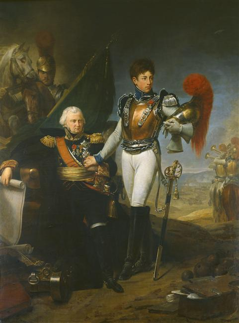
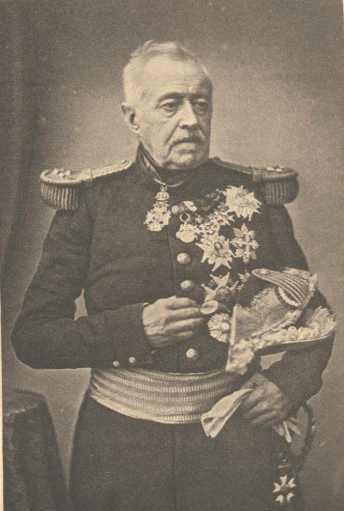
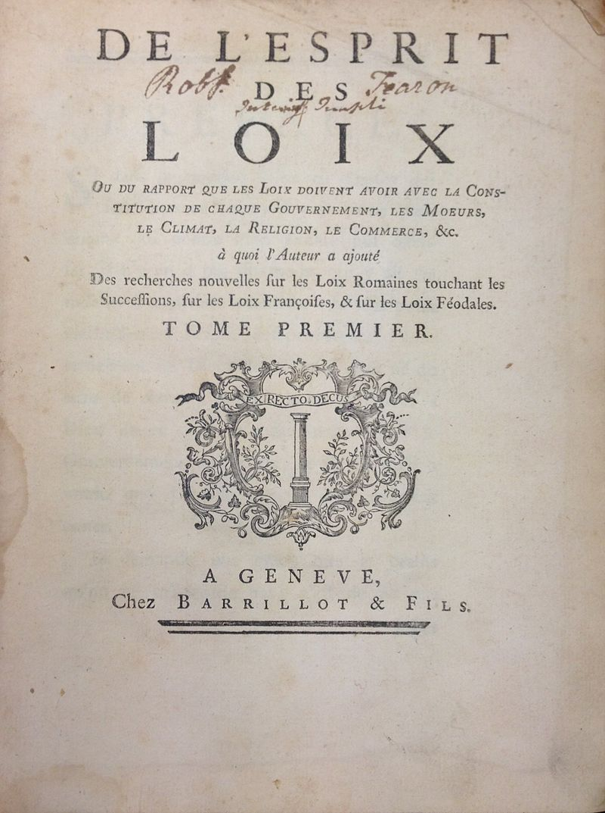
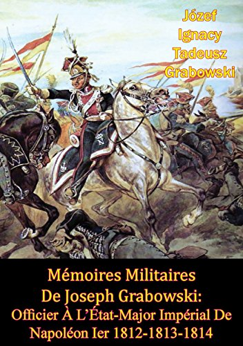

오만과 편견 - 모스크바 철수 계획 (3)
게시: 2021-04-19T06:30:32+09:00
나폴레옹은 모스크바 일대에 주둔한 다부와 네, 모르티에 원수의 군단들에게 3개월치의 곡물과 6개월치의 양배추 절임을 준비하도록 지시했습니다. 3개월치의 건빵과 밀가루는 그렇다치고, 6개월치의 양배추 절임은 그야말로 월동준비였습니다. 또한 모스크바 시내의 주요 수도원들과 크레믈린 궁전의 방어시설을 든든히 하도록 지시했습니다. 또한 이젠 말이 없어서 아무 짝에도 쓸모가 없던 기존 기병대원들에게 머스켓 소총을 지급하고 나폴레옹의 주력부대가 '원정'을 떠난 사이 모스크바를 지키도록 했습니다. 심지어 그의 개인 궁정 식솔들 중 상당부분도 그의 '원정'에서 제외시키고 크레믈린 궁전에 남도록 했습니다. 뿐만 아니었습니다. 출발 바로 직전인 10월 18일, 그는 포병감이던 라리봐지에르(Jean Ambroise Baston de Lariboisière) 장군에게 편지를 보내 "내가 원정을 떠났다 모스크바로 돌아올 가능성이 높으니 아직 쓸만한 물자는 아무것도 파기하지 말라"는 명령까지 내렸습니다. 그는 이렇게 '원정'을 떠났다가 곧 다시 모스크바로 돌아올 계획이라는 것을 온 몸으로 외쳤습니다.

(라리부아지에르 장군의 아들은 총기병대 소속의 젊은 장교였는데, 바로 얼마전 보르디노 전투에서 전사했습니다. 돌격을 시작할 때 아들 페르디낭은 아버지를 향해 경례를 한 뒤 말을 달렸고, 그로부터 몇 분 뒤에 전사했습니다. 아들을 잃은 아버지도 결국 1812년 겨울을 못 넘기고 쾨니히스베르크에서 병사하고 말았습니다. 이렇게 나폴레옹 궁정화가인 그로(Gros)가 그린 근사한 초상화를 남긴 대가치고는 너무 크지 않나 생각합니다.) 후퇴가 질서정연하려면 후위대가 든든해야 했는데, 그러자면 후위대에 기동력이 좋은 기병대가 잔뜩 배치되어야 했습니다. 하지만 말이 없어서 후퇴하는 와중에 그게 가능할 리가 없었습니다. 그리고 이 모든 것이 나폴레옹의 책임이었습니다. 그랑다르메가 모스크바에 입성했을 때, 말을 잃고 할 일을 잃은 '전직' 기병대원이 이미 수천명 수준으로 있었고 그 숫자는 나날이 쑥쑥 불어나고 있었습니다. 전투기를 잃은 조종사는 후방으로 보내 새 전투기를 타게 하는 것이 상식이었습니다. 그러나 앞서 언급했듯이 나폴레옹은 이들을 후방으로 보내는 대신 이들에게 카빈 소총을 지급하고는 새 보병연대를 구성하도록 했습니다. 이들은 아무짝에도 쓸모가 없었습니다. 카스텔란(Boniface de Castellane) 대위의 기록에 따르면 이들은 소총으로 뭘 해야 하는지도 몰랐고 기본적인 제식 훈련도 되어 있지 않았으며 사기도 개판이었습니다. 이건 당시 기병들이 재장전의 어려움 때문에 화약 무기를 거의 쓰지 않고 오로지 검과 창에 의지했으며 상당수의 기병들은 규정상 휴대하게 되어 있던 권총 휴대도 거부했다는 것을 생각하면 이해가 가는 상황이었습니다. "최악의 보병 연대도 이런 말없는 기병들로 만들어진 4개 연대보다 훨씬 나았다. 이들은 당나귀처럼 툴툴거릴 뿐 아무짝에도 쓸모가 없었다."

(카스텔란(Esprit Victor Elisabeth Boniface de Castellane) 백작입니다. 이 사진은 1860년 프랑스 육군 원수가 되었을 때 찍은 것입니다. 1812년 당시 그는 24세의 젊은 대위였고, 당시엔 나르본(Narbonne) 백작의 참모였습니다. 후퇴가 시작되면서 그는 소령으로 진급하여 나폴레옹의 개인 수행 참모가 되었습니다. 사진에서 보시다시피 그는 공화국과 제2 제정 때까지 승승장구하며 잘 살았습니다.) 란 원수 사망시 그의 참모로서 그의 임종을 지켰던 마르보(Antoine Marbot) 대령은 당시 생시르(Saint Cyr) 장군 밑에서 제23 엽기병 연대장으로 있었는데, 란 원수를 닮아서인지 그는 말을 잃은 기병들을 후방으로 보내지말라는 명령을 정면으로 거역하고 그의 부하들 중 말이 없는 부하들을 모조리 바르샤바로 보내 새 말을 구해서 돌아오도록 했습니다. 덕분에 그의 연대는 후퇴할 때 전투 가능한 기병 250기를 유지할 수 있었습니다만 생시르 휘하 다른 연대의 말을 잃은 기병들은 결국 아무런 후위대 역할도 하지 못하고 모조리 러시아군에게 항복하여 포로가 되었습니다. 이들을 모두 후방으로 되돌려 보냈었다고 해도, 그들이 모두 말을 구해 되돌아오지는 않았을 것입니다. 그러나 이어지는 1813년과 1814년의 전투에서 나폴레옹이 기병 부족으로 엄청난 고생을 했던 것은 이때 말 뿐만 아니라 기병들도 무의미하게 소모해버린 것이 탓이 컸습니다. 마르보 대령이 란에게 잘 배운 것은 그런 점 뿐만이 아니었습니다. 마르보는 9월부터 휘하 병사들에게 모양새에 상관없이 양가죽으로 된 코트를 현지 농민들로부터 구입하여 갖추라고 지시했었습니다. 이렇게 행동한 것이 마르보 하나 뿐만은 아니었습니다. 러시아의 겨울을 잘 알고 있던 폴란드 기병대도 대부분 그런 방한복을 갖추라는 명령을 받았고 나폴레옹의 궁정 식솔들도 그 수장인 마복시(Grand Ecuyer, Master of Horses)가 바로 러시아 주재 프랑스 대사로 몇 년 근무한 콜랭쿠르였던 덕분에, 콜랭쿠르의 명에 따라 그런 방한복과 장갑, 털모자 등을 준비해놓고 있었습니다. 뿐만 아니라 몇몇 생각있는 장교들은 개인 차원에서 그런 방한복을 갖추었습니다. 어떤 장교들은 다리도 길고 덩치도 큰 유럽산 말 대신 지푸라기와 소나무 가지를 먹고도 잘 견디는 키가 작은 코사크 말을 구하여 자신의 개인 마차를 끌도록 했습니다. 그런 마차에는 여태까지 개인적으로 긁어모은 털가죽 등 전리품과 건빵, 와인, 럼, 커피, 차와 함께 심심할 때 읽기 위한 소설책과 러시아 역사서, 심지어 잠이 안 올 때 딱 좋을 것 같은 몽테스키외의 '법의 정신(De l'esprit des lois)'까지 갖추기도 했습니다.

(몽테스키외의 명저인 '법의 정신'입니다. 당시엔 이런 책 내면 처벌 받을 가능성이 있어서 보시다시피 책에는 저자명이 없이 무명씨의 작품으로 출간되었습니다. 전쟁터에서 이런 책을 읽다니, 저 책을 다운로드만 받아놓고 읽고 있지 않는 제가 다 부끄럽네요.)
사람이 입을 방한장구류도 중요했지만 프랑스인들이나 이탈리아인들은 잘 생각하지 못했던 중요한 문제도 있었습니다. 바로 말편자였습니다. 모스크바에 입성하여 휴식을 좀 취하고 나자, 폴란드 부대들은 곧 대장간을 차려놓고 스파이크가 달린 말 편자를 만들기 시작했습니다. 그들은 프랑스 부대에게도 '니들도 이런 거 만들어라'라고 충고했으나, 프랑스 부대들은 촌티나는 폴란드인들의 조언 따위는 한귀로 흘려버렸습니다. 나폴레옹의 근위 사령부에 배속되어 있던 조제프 그라보프스키(Josef Grabowski)라는 폴란드 장교는 이렇게 프랑스인들의 오만함을 비판했습니다. "그동안 수많은 전쟁을 겪은 프랑스인들의 고집스러운 오만함은 자신들이 세상에서 가장 똑똑하며 어느 누구의 충고도 필요없다는 생각을 갖게 해서, 어느 누구의 충고도 듣지 않았고 결국 스파이크가 달린 말편자를 갖추지 않았다."

(이건 그라보프스키의 회고록입니다. 당시 나폴레옹과 조금이라도 면식이 있는 사람은 다 썼다고 할 정도로 나폴레옹에 대한 회고록은 넘쳐 납니다. 그리고 그런 회고록에서는 각자의 입장과 이익에 따라 주장하는 진실이 다 서로 다릅니다.) 그러나 딱 거기까지였습니다. FM 지휘관의 대명사격인 다부조차도 병사들의 군복과 군화 등을 수선하도록 하는 등 일반적인 유지정비를 꼼꼼히 했으나 방한장비를 갖출 생각은 하지 않았습니다. 앞서 언급되었듯이 나폴레옹이 희한할 정도로 '러시아의 혹독한 겨울은 다 호사가들이 꾸며낸 과장'일 뿐이라며 방한장구류를 갖춰야 한다는 제언을 무시했기 때문이었습니다. 콜랭쿠르가 말편자에 대해서도 이야기하며 전군에게 같은 조치를 취하도록 하자고 제언했습니다만 단칼에 거절되었습니다. 하긴 모든 것이 계획대로 된다면 그랑다르메는 11월 초에는 스몰렌스크까지 후퇴해 있을 예정이었으므로 털모자를 구하느라고 시간을 낭비할 필요가 없었을 것입니다. 이렇게 10월 20일 철수 날짜를 확정했으나 그 철수 결정은 나폴레옹과 그 최측근 이외에는 아무도 몰랐습니다. 결과적으로는 나폴레옹 본인도 자신이 언제 철수하게 되는지는 몰랐습니다. 10월 18일, 나폴레옹은 여태까지 했던 것처럼 크레믈린 앞 광장에서 사열식을 수행하고 있었습니다. 이 날 사열식 대상은 네의 제3 군단이었습니다. 그런데 한창 사열식이 진행 중이던 한낮, 뮈라의 참모인 베렝거(Béranger) 장군이 광장에 황급히 말을 달려 나타났습니다. 그리고 프랑스군은 당장 그날 밤 철수를 시작하게 됩니다. 베렝거 장군이 가져온 소식은 어떤 것이었을까요?
Source : 1812 Napoleon's Fatal March on Moscow by Adam Zamoyski
en.wikipedia.org/wiki/Boniface_de_Castellane
fr.wikipedia.org/wiki/De_l%27esprit_des_lois
en.wikipedia.org/wiki/Jean_Ambroise_Baston_de_Lariboisi%C3%A8re